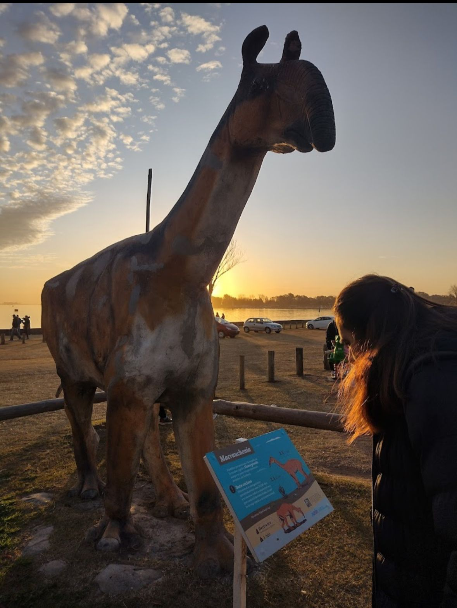

Explorá el mundo prehistórico y descubrí criaturas que dominaron la Tierra hace millones de años.
Ver HistoriaJosé María Marchetto, coordinador del museo, indicó: “Hay mucho material que se ha encontrado en nuestra ciudad. Sobre todo cuando las aguas del río Salado, en el tramo que atraviesa Junín, bajaron más de lo normal producto de la sequía. Eso trajo aparejada una gran cantidad de descubrimientos y rescates de diversos restos fósiles de animales que habitaron la región hace más de 10.000 años”. “Desde el espacio siempre trabajamos en equipo, no solo los días de semana, cuando llegan estudiantes a visitar el lugar, sino también los fines de semana, que recibimos a diferentes personas que vienen a pasar el día al Parque Natural Laguna de Gómez, desde vecinos de la ciudad hasta gente de la zona, región y extranjeros. Llegan de todas partes del mundo, Venezuela, Perú, Bélgica, Francia, entre otros lugares”.
Está ubicado a metros del sitio donde se hallaron cientos de restos fósiles de animales prehistóricos que habitaron el lugar hace más de 10 mil años, a la vera del río Salado.

Descubrí uno de los depredadores más famosos de la historia.
Conocé la historia de este dinosaurio herbívoro gigante.
Observá restos fósiles auténticos encontrados por paleontólogos.